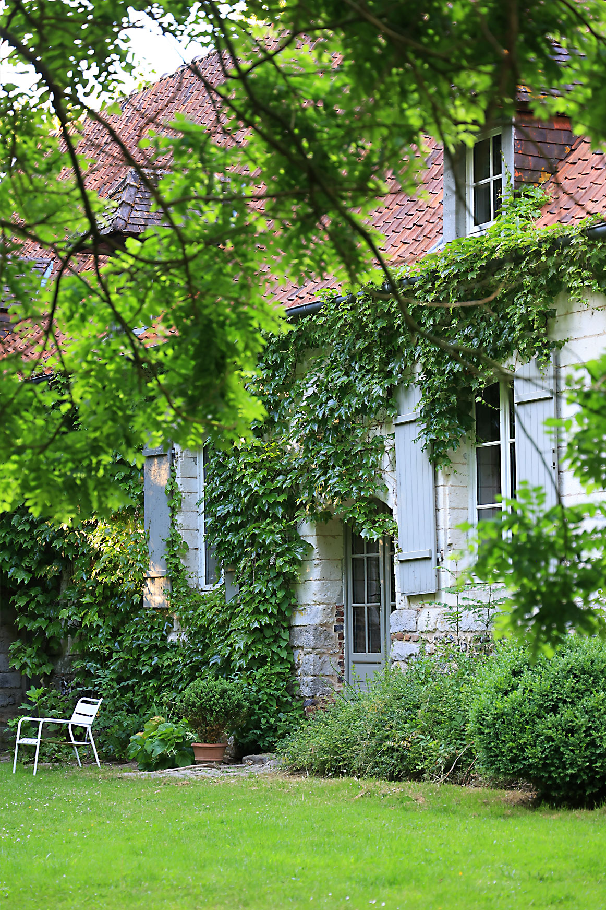

<div class="container-text-intro" id="texte-intro">
  <div class="texte-intro" [ngClass]="{'row' : !telephonePortable}">
    <h2 data-aos="fade-up" data-aos-anchor-placement="top-bottom">Le clos d'Adam</h2>
    <h3 data-aos="fade-up" data-aos-anchor-placement="bottom-bottom" data-aos-delay="200"
    >reposant et inoubliable</h3>
    <div class="container-intro">
      <div class="container-text" [ngClass]="{'col-6' : !telephonePortable}">
        <p>
          Bienvenue au Clos d'Adam, notre gîte de caractère situé dans le charmant village de Cubjac en Périgord Blanc.
          Dès le portail passé, le charme opère…entre pierres de Limeyrat et chênes verts Le Clos offre un hébergement de 6 personnes. Profitez de notre bois et  des forêts pour randonner et découvrir les environs . Détendez-vous dans la piscine chauffée, sur la terrasse baignée de soleil et sa cuisine d'été  Tout ici invite à partager de bons moments conviviaux…
        </p>
        <p [hidden]="telephonePortable">Le Clos d'Adam est idéal pour découvrir ou redécouvrir la Dordogne Situé à 17 km de Périgeux, 55 km de Sarlat et 70 km de Bergerac,
            vous pourrez ainsi traverser L’Histoire de France au travers de :
            - ses sites préhistoriques ( Montignac Lascaux, la Roche st Christophe)..;
            -  ses grottes ( Tourtoirac, Domme….),
            - ses 1001 châteaux ( Castelnaut, Beynac, Hautefort…),
            - ses villes et villages remarquables,
            - ses jardins merveilleux
            - sans oublier sa gastronomie locale   avec ses nombreux marchés. ,
            Le Clos d’Adam offre également de nombreuses activités sportives:
            Une salle de sport à disposition (tapis de marche, vélo éliptique…)
            Tapis de Yoga
            Canoé sur l'Auvézère,( point de départ à quelques minutes du gîte )mais aussi sur la Vézère et la Dordogne.
            Vélo ( 2 VTC à disposition )
            Nombreuses randonnées au départ du Clos
            Salles de sport à Trélissac (mur d’escalade…)
        </p>
        <b>
          Votre bien être est notre priorité, nous serons heureux de vous accueillir pour des vacances inoubliables.
        </b>
      </div>
      <div class="container-images">
          
          
          
      </div>
    </div>
  </div>
</div>

